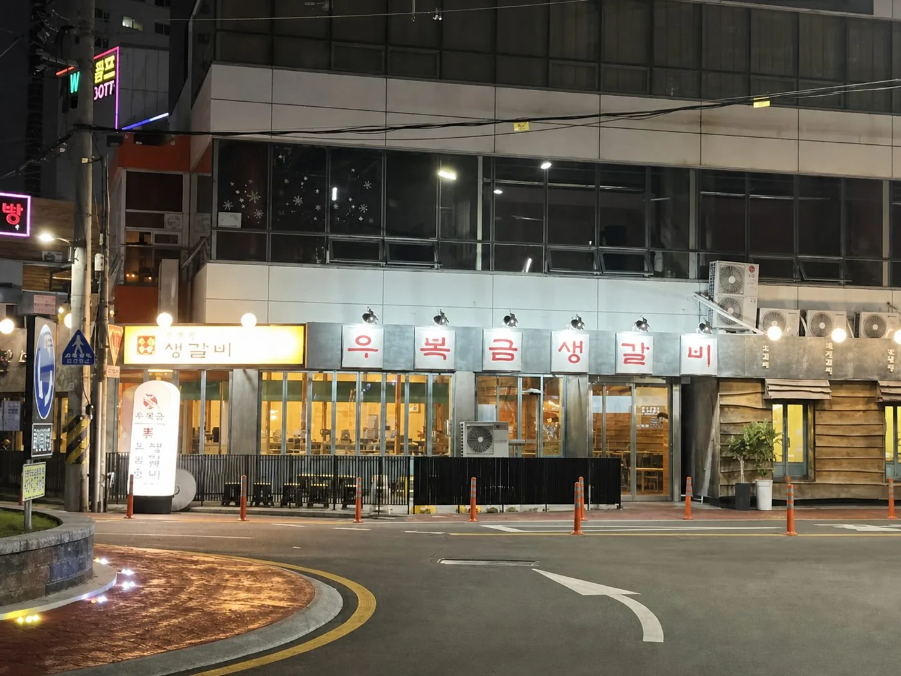
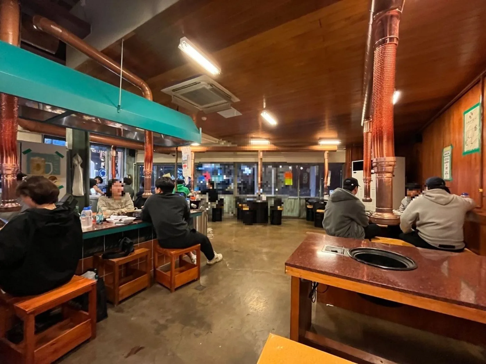

고기집 인테리어, 외관과 홀을 함께 살펴보세요.
위코 포트폴리오의 우복금 본점 사진입니다. 매장 입구와 좌석, 테이블 상부의 배기 설비가 실제 공간에서 어떻게 놓였는지 확인할 수 있습니다.
- 매장 유형
- 고기집 · 우복금 본점
- 사진에서 볼 수 있는 부분
- 외관과 출입구, 카운터·테이블 좌석, 배기 설비


내 매장에 적용할 때 확인할 것
같은 분위기를 원해도 숯불·가스·전기 중 어떤 방식으로 굽는지, 직원이 구워주는지에 따라 테이블 장비와 서비스 공간이 달라집니다. 기존 배기 설비의 재사용 여부와 외부 배출 경로는 현장에서 확인합니다.
견적을 받을 때는 마감 공사와 덕트·급기, 주방 장비와 테이블·가구를 나눠 비교하세요. 사진으로 확인되지 않는 설비 용량이나 공사비는 점포 조건을 확인한 뒤 안내합니다.
어떤 고기집을 만들지 먼저 정합니다.
삼겹살집인지 소고기 전문점인지, 직원이 구워주는지 손님이 직접 굽는지에 따라 테이블과 작업 공간의 조건이 달라집니다. 원하는 분위기와 함께 메뉴, 목표 고객, 서비스 방식을 먼저 정리하세요.
- 식사·가족 외식·회식 중 중심이 되는 방문 목적
- 숯불·가스·전기 등 검토 중인 조리 방식과 테이블 서비스
- 고기 손질·보관, 반찬 준비, 세척에 필요한 작업 공간
- 상호·메뉴판·간판·공간에 일관되게 표현할 브랜드 콘셉트
대구라는 지역명만으로 고객이나 상권을 단정하지 않습니다. 후보 점포 주변의 평일·주말 방문 상황, 경쟁점 메뉴와 가격, 주차·도보 접근성을 실제로 비교합니다.
점포 계약 전, 배기 경로와 기존 설비를 확인합니다.
대구 고깃집 인테리어를 알아볼 때 실내 마감 사진만으로 공사 가능 여부를 판단하기는 어렵습니다. 후드와 덕트 경로, 외부 배출 위치, 급기 방식, 장비 설치 공간과 유지관리 접근성을 현장에서 확인해야 합니다.
기존 고기집 자리도 설비를 그대로 쓸 수 있다고 가정하지 않습니다. 새 조리 방식과 좌석 배치에 맞는지, 작동 상태와 청소·보수 범위는 어떤지 확인합니다. 필요한 용량과 시공 방식은 설비 담당자의 현장 검토로 결정합니다.
건물의 외벽·옥상 사용과 공사 가능 시간, 냄새·소음 영향, 전기·가스·급배수 조건은 임대인·관리 주체 및 해당 전문가에게 확인하세요. 이 안내는 개별 점포의 영업·공사 가능 여부를 확정하는 자료가 아닙니다.
테이블 수와 실제 서비스가 함께 작동해야 합니다.
좌석을 많이 넣는 것보다 고기와 반찬이 나가는 길, 빈 그릇이 돌아오는 길, 직원이 굽고 응대하는 공간을 함께 검토합니다. 단체석은 필요 인원과 예약 비중을 확인한 뒤 정합니다.
테이블 장비, 서비스 여유, 대기와 이동 경로를 봅니다.
손질·보관·배식·세척의 순서와 장비를 정리합니다.
간판, 입구, 메뉴판과 실내 표현을 하나의 콘셉트로 연결합니다.
견적은 같은 공사 범위로 비교합니다.
대구 고기집 인테리어 견적을 비교할 때 철거·마감과 덕트·급기·냉난방, 전기·가스·급배수, 테이블 장비·가구·간판을 구분하세요. 포함·별도 항목, 기존 설비 재사용 조건, 변경 승인 방식과 일정을 문서로 확인합니다.
일률적인 평당 가격이나 특정 좌석 수를 제시하기보다 점포 상태, 메뉴와 서비스 방식에 맞는 범위를 먼저 정하는 것이 필요합니다.
창업 방향과 공간을 연결하고, 맡길 범위를 정합니다.
위코컴퍼니는 브랜드 전략·기획·디자인, 상업공간 기획과 프로젝트 디렉팅의 범위를 협의합니다. 대구 고기집 창업을 준비한다면 점포 확정 전에도 현재 메뉴·콘셉트와 후보 주소를 바탕으로 필요한 검토 항목을 정리할 수 있습니다.
전문 시공이 필요한 공사는 해당 요건을 갖춘 파트너사가 별도 계약으로 수행할 수 있습니다. 설계·시공·설비·브랜딩의 담당과 산출물은 계약 전에 구분합니다.
자주 묻는 질문
대구 고기집 인테리어만 문의할 수 있나요?
가능합니다. 신규 창업인지 운영 중인 매장의 리뉴얼인지, 필요한 공간 범위와 현장 조건을 확인한 뒤 업무 범위를 협의합니다.
고기집으로 운영하던 점포면 덕트를 그대로 사용해도 되나요?
기존 업종만으로 재사용을 결정하지 않습니다. 조리 방식, 배기 경로와 설비 상태를 확인하고 설비 담당자의 현장 검토를 받아야 합니다.
대구 삼겹살집 창업과 브랜딩을 함께 준비할 수 있나요?
메뉴와 고객, 서비스 방식에 맞춰 브랜드 방향·이름과 그래픽·공간 기획의 범위를 함께 협의할 수 있습니다. 전수나 가맹 지원이 포함된다고 가정하지 말고 필요한 업무를 별도로 확인하세요.
고기집 인테리어 상담에 어떤 자료가 필요한가요?
대구 내 후보 주소, 전용면적, 현장 사진이나 도면, 조리 방식, 현재 진행 단계와 희망 일정을 알려주세요. 아직 정하지 못한 항목은 미정으로 남겨도 됩니다.